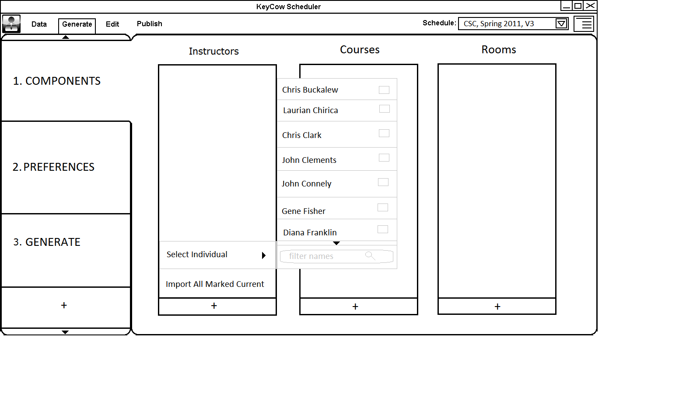
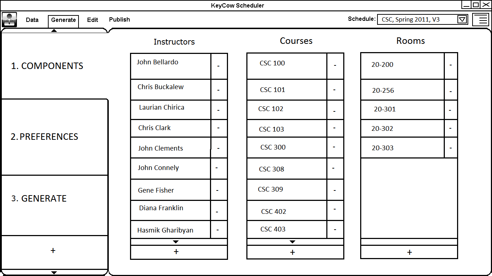
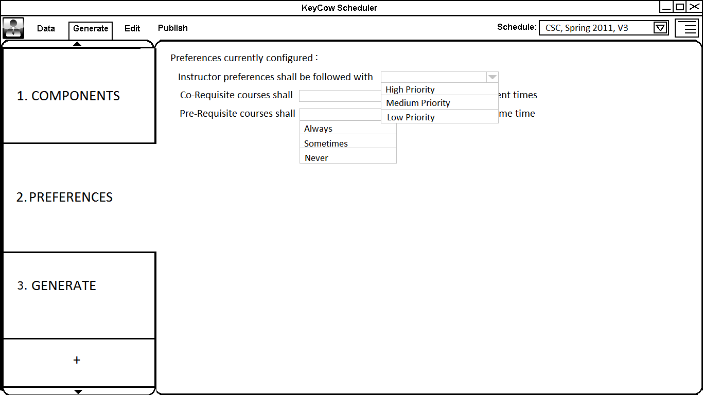
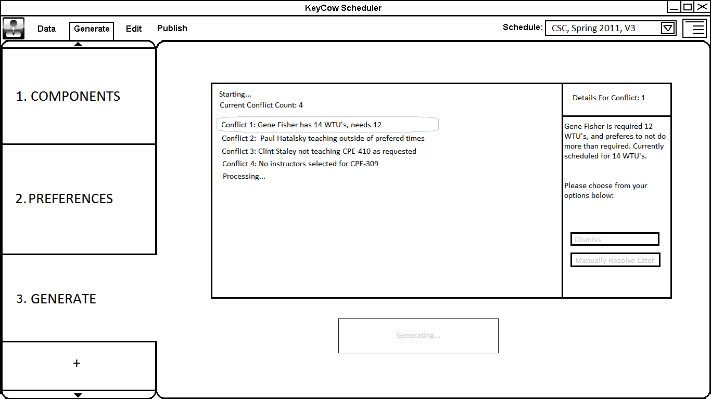
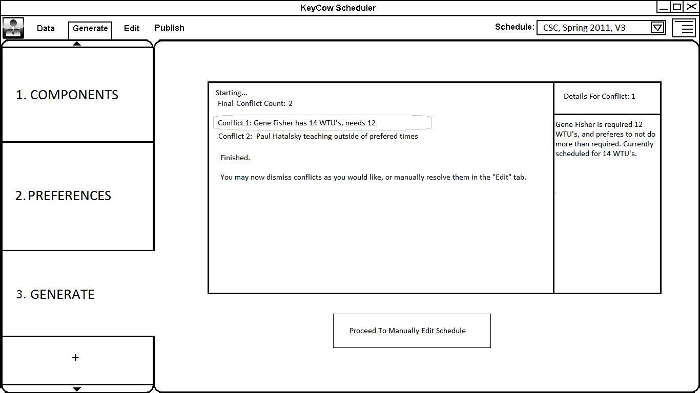

When the user clicks on the “Generate” tab, the image below is what the user will see (the image below assumes this is the first time the user is using the Scheduler software). The tabs on the left allow the user to switch between different settings and view program feed back for the generation of a schedule. The tab view shown below allows the user to select the instructors, rooms, and course that are to be included in the generated schedule.

When the + button is clicked a small menu will appear above it showing two options: 1. “Import All Marked Current” 2. “Select Individuals”
The below example uses Instructors to describe what the user will see. This can be applied for both the Rooms and Courses lists.
1. Import All Marked Current imports all the instructors that are marked for teaching the selected term in the instructors list.
2. When the “Select Individuals” option is selected a second menu pops out to the side displaying all the instructors in the instructor list. There the user checks the boxes next to the instructors to include in the current schedule and they are added to the displayed instructor list in this view.
Shown below are these two options.

The “-” button button beside each instructor, room, and course can be
When the user clicks the “-” button next to any of the instructors, rooms, or courses in the lists shown, that removes that specific entity from the use list.
Shown below is a screen where the user has added all the instructors, rooms, courses for the current term.

When the “Preferences” tab is selected the user sees the options that affect how the schedule is generated. There the user can select how important different preferences are in the generation of the schedule. These preferences include: Instructor preferences, Prerequisite overlap, and co-requisites non overlap. The options for these preferences include: Always, Sometimes, Never, High Priority, Medium Priority, and Low Priority. The default setting for all preferences is Sometimes and Medium Priority.
Shown below is the first thing the user sees when selecting the Preferences tab.

Shown below are the values the user can select for the different priority levels for each preference.

When the user selects the Generate tab the screen below is shown.

When the user clicks Begin Generating and the Software begins to generate the schedule. While the schedule is being generated the user will see feedback from the Software displaying conflicts that are currently in the schedule. When the user clicks on a conflict that is displayed during schedule generation, the right box will display the information of the selected conflict. The user will not be able to click either of the two buttons while the schedule is being generated. While the schedule is being generated, the user may see the “Current Number of Conflicts” go up or down.
Shown below is a user selected conflict.

After the Software finishes generating the schedule, a total number of conflicts is displayed with the resulting conflicts. As shown below when the user clicks on a conflict the two buttons become active and they can select Dismiss Conflict or Resolve Manually.
Dismiss Conflict marks the conflict as resolved and removes it from the conflicts list.
Resolve Manually leaves the conflict in the list so when the user goes to edit generated schedule it will appear there.
